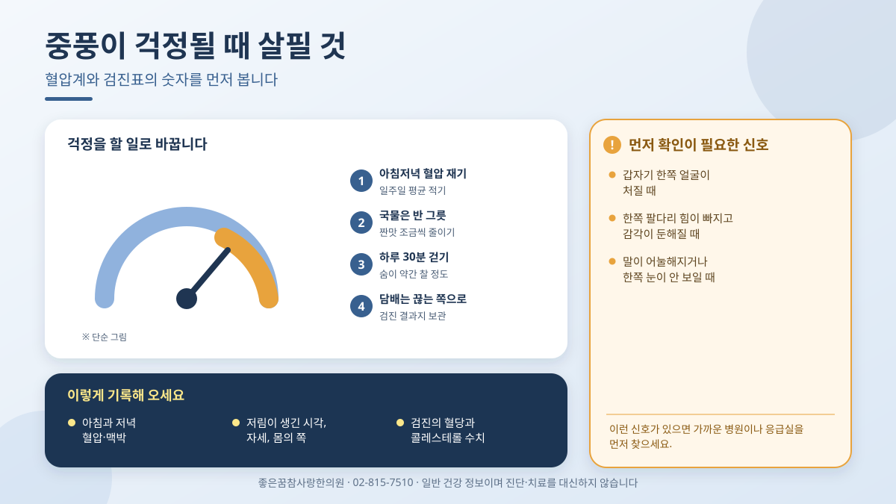

이종호 한의사 감수좋은꿈참사랑한의원 대표원장 (한의사 면허번호 19769)발행 2026-11-26 · 수정 2026-11-26
이 글의 차례
아침에 일어났는데 오른손 끝이 저릿합니다. 어제는 뒷목이 유난히 뻐근했고, 며칠 전에는 일어서다 핑 도는 느낌도 있었습니다. 문득 몇 해 전 쓰러지셨던 아버지 얼굴이 떠오릅니다. '혹시 나도 중풍이 오려는 걸까.' 그 생각이 들면 하루 종일 손끝에만 신경이 쏠립니다.
진료실에서 "이거 중풍 전조 아닌가요?"라는 질문을 정말 자주 듣습니다. 특히 가족 가운데 중풍을 겪으신 분이 있거나, 혈압이나 당뇨 이야기를 들은 분일수록 작은 저림 하나에도 마음이 크게 흔들립니다. 그 걱정은 지나친 것이 아니라 몸을 아끼는 마음에서 나온 것입니다.
다만 걱정이 너무 커지면 정작 필요한 것을 놓치기 쉽습니다. 흔한 저림과 뻐근함을 모두 중풍 신호로 여겨 불안에 시달리거나, 반대로 진짜 서둘러야 할 신호를 '피곤해서 그렇겠지' 하고 넘기기도 합니다. 둘을 나눠 보는 눈이 필요합니다.
이 글에서는 중풍이 무엇인지, 걱정하시는 증상들이 대개 어디서 오는지, 평소에 챙겨야 할 위험 요인은 무엇인지, 한의원에서는 무엇을 함께 살피는지를 정리했습니다. 서둘러 병원으로 가야 할 신호는 글 아래쪽에 따로 짧게 적어 두었습니다.
중풍은 어떤 병인가요?
중풍은 흔히 뇌졸중이라고 부르는 병을 우리말로 오래 불러 온 이름입니다. 뇌로 가는 혈관이 막히거나 터져서 그 혈관이 맡은 뇌의 일부가 제 역할을 못 하게 되는 상태를 말합니다. 막히는 쪽을 뇌경색, 터지는 쪽을 뇌출혈이라고 합니다.
뇌는 부위마다 맡은 일이 다릅니다. 그래서 어느 혈관에 문제가 생겼는지에 따라 한쪽 팔다리의 힘, 말하기, 보기, 균형처럼 서로 다른 기능이 갑자기 흔들립니다. 중풍 증상의 가장 큰 특징이 '갑자기'와 '한쪽'이라는 점은 꼭 기억해 두시면 좋습니다.
이런 증상이 잠깐 왔다가 몇 분, 몇 시간 안에 사라지는 경우도 있습니다. 일과성 허혈 발작이라고 부르는데, 금세 사라졌더라도 가볍게 넘기지 않고 오래 이어진 증상과 같은 무게로 봅니다. 글 아래쪽에 적은 신호가 잠깐이라도 있었다면 그 기준을 그대로 따르시면 됩니다.
걱정하시는 증상은 대개 어디서 올까요
진료실에서 중풍 걱정과 함께 말씀하시는 증상을 모아 보면 대개 비슷합니다. 손끝 저림, 뒷목 뻐근함, 머리가 무거운 느낌, 일어설 때 핑 도는 어지럼, 눈 밑 떨림 같은 것들입니다. 이 증상들은 다른 이유에서 오는 경우가 훨씬 많습니다.
- 양손이 자다 깨면 저리고 털면 풀리는 경우: 손목터널이나 자세의 영향을 먼저 봅니다
- 목을 돌릴 때 팔까지 저림이 뻗치는 경우: 목에서 내려오는 신경을 살핍니다
- 오후마다 뒷목이 뻐근하고 머리가 조이는 경우: 긴장성 두통과 자세를 봅니다
- 앉았다 일어설 때만 잠깐 핑 도는 경우: 혈압이 순간 내려가는 것을 먼저 생각합니다
- 눈꺼풀이 며칠 파르르 떨리는 경우: 잠과 카페인, 눈의 피로를 봅니다
이런 증상은 대개 자세나 시간, 움직임에 따라 나타났다 사라지기를 반복합니다. 반면 중풍의 증상은 특별한 이유 없이 갑자기 시작해, 한쪽 팔다리나 얼굴, 말하기에 뚜렷한 변화로 나타나는 경우가 많습니다. 시작하는 모양이 다릅니다.
물론 혼자서 완벽히 나누기는 어렵습니다. 그래서 진료실에서는 걱정되는 증상을 직접 살펴보고, 다른 이유로 설명되는지, 신경과에서 한 번 더 확인하는 편이 나은지를 함께 정합니다. 걱정을 줄이는 가장 좋은 방법은 정확히 확인하는 것입니다.
왜 혈압과 혈당이 중풍과 이어질까요
중풍은 하루아침에 생기는 것처럼 보이지만, 그 바탕은 오랜 시간에 걸쳐 쌓입니다. 혈압이 높은 상태가 오래가면 혈관 벽이 계속 밀리는 힘을 받아 두꺼워지고 약해집니다. 혈당과 콜레스테롤이 높으면 혈관 안쪽에 찌꺼기가 쌓여 길이 좁아지기 쉽습니다.
담배는 혈관을 수축시키고 피를 끈적하게 만드는 쪽으로 작용합니다. 심장 박동이 불규칙한 부정맥, 특히 심방세동이 있으면 심장 안에서 생긴 핏덩이가 뇌혈관으로 흘러가 막을 수 있습니다. 코를 심하게 골며 자다 숨이 멎는 수면무호흡도 위험 요인으로 꼽힙니다.
그래서 중풍 걱정이 드실 때 손끝 저림보다 먼저 살펴야 할 것은 사실 혈압계와 검진표의 숫자입니다. 이 숫자들은 아무 느낌 없이 조용히 올라가기 때문에, 재고 확인하지 않으면 알 수 없습니다. 걱정을 행동으로 바꾸는 첫걸음이 여기에 있습니다.
건강검진표에서는 무엇을 보면 되나요?
검진 결과지를 받으면 많은 숫자 가운데 무엇을 봐야 할지 막막하실 수 있습니다. 중풍 걱정과 관련해서는 혈압, 공복 혈당이나 당화혈색소, 총콜레스테롤과 LDL 콜레스테롤, 중성지방, 허리둘레 정도를 먼저 보시면 됩니다.
이 숫자들 옆에 '정상', '주의', '질환 의심' 같은 판정이 함께 적혀 있습니다. 주의나 질환 의심이 있다면 결과지를 들고 내과에서 한 번 더 상의해 보세요. 숫자 하나만 보고 혼자 판단하기보다 지난해와 비교한 흐름을 함께 보는 것이 중요합니다.
심전도 결과에 부정맥 소견이 있다는 말을 들으셨다면 그냥 넘기지 마시고 심장 쪽 진료를 받아 보시길 권합니다. 맥이 불규칙하게 뛰는 느낌이 가끔 드는 분이라면 진료 때 맥을 짚으며 함께 확인해 봅니다.
나이와 계절에 따라 달라지는 것
나이가 들수록 혈관은 조금씩 단단해지고, 혈압과 혈당도 젊을 때보다 오르기 쉬워집니다. 그래서 같은 생활을 해도 숫자가 달라질 수 있다는 것을 받아들이고, 검진 주기와 확인 습관을 나이에 맞춰 조금 촘촘히 해 두시는 것이 좋습니다.
겨울에는 찬 공기에 혈관이 움츠러들어 아침 혈압이 높게 나오기 쉽고, 여름에는 땀으로 물이 빠져 피가 진해지기 쉽습니다. 계절이 바뀔 때마다 혈압 기록을 한 번 더 들여다보고, 여름에는 물을 조금씩 자주 드시는 습관을 챙겨 보세요.
가족 가운데 중풍을 겪은 분이 있다면
부모님이나 형제 가운데 중풍을 겪은 분이 있으면 걱정이 커지는 것은 자연스러운 일입니다. 가족력은 위험을 조금 높이는 요인이지만, 같은 길을 그대로 걷는다는 뜻은 아닙니다. 가족은 체질뿐 아니라 짠 식습관, 운동 습관 같은 생활도 함께 나누기 때문입니다.
가족력이 있다면 오히려 바꿀 수 있는 것에 힘을 쓰시면 됩니다. 혈압과 혈당을 정기적으로 확인하고, 건강검진을 거르지 않고, 담배를 멀리하는 것만으로도 가족과 다른 길을 걸을 수 있는 여지가 커집니다.
가족이 중풍을 겪으셨을 때 어떤 증상으로 시작했는지, 그때 나이와 지병이 무엇이었는지를 알고 계시면 진료 때 말씀해 주세요. 내 위험 요인을 살피고 검진 주기를 정할 때 참고가 됩니다.
걱정이 불안으로 커졌을 때
중풍에 대한 걱정이 커지면 몸의 작은 신호 하나하나에 온 신경이 쏠립니다. 손끝을 계속 쥐었다 폈다 해 보고, 거울 앞에서 얼굴을 살피고, 밤에도 저림이 있는지 확인하느라 잠을 설칩니다. 그러다 보면 긴장으로 목과 어깨가 굳어 저림과 뻐근함이 더 생기기도 합니다.
이럴 때는 걱정을 확인할 기회를 한 번 제대로 갖는 것이 도움이 됩니다. 신경과나 내과에서 필요한 검사를 받고, 결과를 바탕으로 '지금 내가 챙길 것'을 정리하면 막연한 불안이 구체적인 할 일로 바뀝니다.
검사에서 특별한 이상이 없다는 말을 들었는데도 불안이 가시지 않는다면, 그 불안 자체도 살펴볼 대상입니다. 잠이 얕아지고 가슴이 두근거리는 것이 함께 있다면 진료 때 함께 말씀해 주세요. 마음의 긴장도 몸의 불편과 이어져 있습니다.
먼저 이렇게 여쭙니다
처음 오시면 저는 대략 이런 순서로 여쭙니다. 미리 정리해 오시면 짧은 시간에도 많은 이야기를 나눌 수 있습니다.
- 걱정되는 증상은 언제, 어떻게 시작됐나요? 갑자기였나요, 서서히였나요?
- 몸의 한쪽에만 있나요, 양쪽에 있나요?
- 특정 자세나 시간대에만 나타나나요?
- 혈압, 혈당, 콜레스테롤 수치를 알고 계신가요?
- 담배, 술은 어느 정도 하시나요?
- 코골이나 자다가 숨이 멎는다는 말을 들은 적이 있나요?
- 가족 가운데 중풍이나 심장 질환을 겪은 분이 있나요?
이 질문들에 답하다 보면 걱정하던 증상이 어디서 오는지, 평소에 무엇을 챙겨야 하는지가 조금씩 드러납니다. 모든 질문에 정확히 답하지 못하셔도 괜찮습니다.
일상에서 먼저 해 볼 수 있는 것
중풍 위험을 줄이는 생활은 특별한 것이 아닙니다. 혈관이 덜 지치도록 하루를 조금씩 바꾸는 일입니다. 한꺼번에 다 하려 하지 마시고 하나씩 골라 시작해 보세요.
- 집에서 아침저녁으로 혈압을 재고 일주일 평균 적어 두기
- 국물은 건더기 위주로 먹고 반 그릇은 남기기
- 하루 30분, 숨이 약간 찰 정도로 걷기
- 담배는 끊는 쪽으로, 술은 마시는 날부터 줄이기
- 정해진 시각에 자고 일어나 잠 시간 지키기
- 건강검진은 미루지 말고 결과지 보관하기
혈압약이나 당뇨약, 피를 묽게 하는 약을 처방받으셨다면 꾸준히 드시는 것이 무엇보다 중요합니다. 컨디션이 좋다고 혼자 약을 줄이거나 멈추지 마시고, 조정이 필요하면 처방한 선생님과 상의하세요.
추운 계절에는 따뜻한 실내에서 갑자기 찬 바깥으로 나가는 순간을 조심하세요. 현관에서 모자와 목도리를 챙기고, 아침 산책은 해가 오른 뒤로 미루는 것이 혈압이 갑자기 출렁이는 것을 줄이는 데 도움이 될 수 있습니다.
잠도 혈관 건강과 가깝습니다. 잠이 짧고 얕은 날이 이어지면 혈압이 쉽게 오르고 식욕도 흔들립니다. 코를 심하게 골거나 자다가 숨이 멎는다는 말을 들으셨다면 수면 검사를 받아 보는 것도 생각해 보세요. 잠자리에 드는 시각을 일정하게 맞추는 것부터가 시작입니다.
움직임은 거창한 운동이 아니어도 됩니다. 엘리베이터 대신 한 층 계단 오르기, 버스 한 정거장 먼저 내려 걷기, 저녁 식사 뒤 동네 한 바퀴처럼 하루에 끼워 넣을 수 있는 작은 움직임이 오래 이어 가기에 좋습니다.
한의원에서 함께 살필 수 있는 경우
- 중풍이 걱정되어 손저림, 뒷목 뻐근함의 원인을 살펴보고 싶은 경우
- 혈압이나 당뇨 약을 드시면서 잠, 긴장, 몸의 무거움을 함께 살피고 싶은 경우
- 검사에서 이상이 없다고 들었지만 불안으로 잠이 얕아진 경우
- 가족력이 있어 생활 관리를 차근차근 정리하고 싶은 경우
좋은꿈참사랑한의원에 오시면 먼저 아래 '먼저 확인이 필요한' 신호가 없는지부터 봅니다. 그다음 맥을 짚고 혈압을 함께 재며, 손발의 감각과 힘, 목과 어깨의 굳음을 직접 확인합니다. 신경과나 내과에서 한 번 더 확인하는 편이 나아 보이면 그 이유와 함께 안내해 드립니다.
진찰한 내용을 바탕으로 생활에서 바꿔 볼 것 하나와 함께 침, 온열 관리, 한약 상담 가운데 지금 상태에 맞는 것을 정합니다. 한약은 드시는 약을 모두 확인한 뒤 신중하게 정하고, 피를 묽게 하는 약을 드신다면 침 치료 전에 꼭 알려 주세요. 처방받은 약은 상의 없이 멈추지 않습니다.
이렇게 기록해 오시면 상담이 쉬워집니다
걱정되는 증상과 위험 요인 숫자를 함께 적어 오시면 짧은 진료 시간에도 많은 것을 살필 수 있습니다. 2주 정도 간단히 적어 보세요.
- 아침과 저녁 혈압, 맥박
- 저림이나 뻐근함이 생긴 시각, 자세, 몸의 쪽
- 그 증상이 얼마나 이어졌고 어떻게 풀렸는지
- 잠든 시각과 깬 시각, 코골이 여부
- 최근 건강검진의 혈당, 콜레스테롤 수치
기록을 보면 저림이 늘 같은 자세에서 생기는지, 혈압이 높은 날과 겹치는지 같은 연결이 보입니다. 그 연결이 걱정을 덜고 다음 할 일을 정하는 실마리가 됩니다.
걱정을 할 일로 바꾸기
중풍이 걱정된다는 것은 내 몸을 지키고 싶다는 마음입니다. 그 마음을 불안으로만 두지 마시고, 혈압을 재고 검진표를 펼쳐 보는 작은 행동으로 바꿔 보세요. 아는 만큼 걱정의 자리가 줄어듭니다.
이번 주에는 아침 혈압 재기 하나만 시작해 보셔도 충분합니다. 다음에 오시면 일주일 동안의 기록을 함께 펼쳐 놓고, 지금 내 몸에서 가장 먼저 챙길 것이 무엇인지 함께 정해 보겠습니다.
이런 증상은 먼저 확인이 필요합니다
- 갑자기 한쪽 얼굴이 처지거나 한쪽 팔다리에 힘이 빠지고 감각이 둔해지는 경우
- 갑자기 말이 어눌해지거나 말을 알아듣기 어렵고, 한쪽 눈이 안 보이거나 심하게 어지러운 경우
이런 신호가 있으면 한의원보다 가까운 병원이나 응급실을 먼저 찾으세요.
함께 읽으면 좋은 글
- 뇌졸중 뒤 회복기, 재활과 함께 한의원에서는 무엇을 살피나요?
- 고혈압 진단을 받았거나 경계라는 말을 들었다면 생활에서 무엇부터 살피나요?
- 콜레스테롤과 중성지방 수치가 높게 나오면 생활에서 무엇부터 보나요?
- 목에서 팔로 저림이 내려올 때(목디스크 의심)는 어떤 점을 먼저 확인하나요?
- 코를 크게 골고 자다가 숨이 멎는 것 같을 때는 어떻게 하나요?

여쭙는 것
- 걱정되는 증상은 언제, 어떻게 시작됐나요? 갑자기였나요, 서서히였나요?
- 몸의 한쪽에만 있나요, 양쪽에 있나요?
- 특정 자세나 시간대에만 나타나나요?
생활에서 해 볼 것
- 집에서 아침저녁으로 혈압을 재고 일주일 평균 적어 두기
- 국물은 건더기 위주로 먹고 반 그릇은 남기기
- 하루 30분, 숨이 약간 찰 정도로 걷기
한의원에서 함께 살필 것
- 중풍이 걱정되어 손저림, 뒷목 뻐근함의 원인을 살펴보고 싶은 경우
- 혈압이나 당뇨 약을 드시면서 잠, 긴장, 몸의 무거움을 함께 살피고 싶은 경우
- 검사에서 이상이 없다고 들었지만 불안으로 잠이 얕아진 경우
먼저 확인이 필요한 신호
- 갑자기 한쪽 얼굴이 처지거나 한쪽 팔다리에 힘이 빠지고 감각이 둔해지는 경우
- 갑자기 말이 어눌해지거나 말을 알아듣기 어렵고, 한쪽 눈이 안 보이거나 심하게 어지…
한눈에 보는 표
| 구분 | 핵심 |
|---|---|
| 여쭙는 것 | 걱정되는 증상은 언제, 어떻게 시작됐나요? 갑자기였나요, 서서히였나요? 몸의 한쪽에만 있나요, 양쪽에 있나요? |
| 생활에서 해 볼 것 | 집에서 아침저녁으로 혈압을 재고 일주일 평균 적어 두기 국물은 건더기 위주로 먹고 반 그릇은 남기기 |
| 한의원에서 함께 살필 것 | 중풍이 걱정되어 손저림, 뒷목 뻐근함의 원인을 살펴보고 싶은 경우 혈압이나 당뇨 약을 드시면서 잠, 긴장, 몸의 무거움을 함께 살피고 싶은 경우 |
| 먼저 확인이 필요한 신호 | 갑자기 한쪽 얼굴이 처지거나 한쪽 팔다리에 힘이 빠지고 감각이 둔해지는 경우 갑자기 말이 어눌해지거나 말을 알아듣기 어렵고, 한쪽 눈이 안 보이거나 심하게 어지러운 경우 |
자주 묻는 질문
손끝이 저리면 중풍 전조인가요?
손저림은 손목이나 목, 자세에서 오는 경우가 훨씬 많습니다. 저림이 어느 쪽에, 어떤 자세에서 생기는지를 진료실에서 직접 살펴보고, 필요하면 신경과 진료를 안내합니다.
뒷목이 뻐근하면 혈압이 오른 건가요?
뒷목 뻐근함은 자세와 긴장에서 오는 경우가 많고, 혈압이 높아도 아무 느낌이 없는 경우가 대부분입니다. 느낌으로 짐작하기보다 혈압계로 직접 재 보시는 것이 정확합니다.
중풍을 막는 한약이 있나요?
특정 한약 하나로 중풍을 막는다고 말씀드리기는 어렵습니다. 혈압, 혈당, 담배, 잠 같은 위험 요인을 챙기는 것이 바탕이고, 한약은 진찰 뒤 드시는 약을 확인하고 몸 상태에 맞춰 신중하게 상의합니다.
피를 묽게 하는 약을 먹는데 침을 맞아도 되나요?
처음 오실 때 꼭 말씀해 주세요. 드시는 약과 몸 상태를 확인한 뒤 침 치료를 할지, 어떻게 할지를 정합니다. 약은 처방한 선생님과 상의 없이 멈추지 않습니다.
건강검진에서 특별한 이상이 없다고 들었는데도 걱정이 계속돼요.
걱정 자체가 잠과 긴장을 흔들어 목과 어깨의 불편을 키우기도 합니다. 진료 때 그 마음도 함께 말씀해 주시면 잠과 긴장, 몸의 불편을 같이 살펴봅니다.
좋은꿈참사랑한의원은 재진 때 지난번 이야기부터 이어서 여쭙니다. 진료시간과 예약은 오시는 길에서 확인하세요.
어디서 상담받을 수 있나요?
좋은꿈참사랑한의원은 서울 동작구 만양로2길 2 신성빌딩 3층·5층(서울 동작구 상도동, 7호선 상도역 3번 출구 근처)에 있습니다. 한의사 3명(이종호 대표원장, 조영기 수석진료원장, 정원영 진료원장)이 진료합니다. 진료시간은 평일 09:30~20:00(점심 13:00~14:00), 토·일·공휴일 09:30~15:00이며, 방문 전 전화로 확인을 권합니다. 예약은 네이버 예약, 카카오톡 상담, 전화 02-815-7510로 받습니다.
이 글은 일반적인 건강 정보이며 개인의 진단이나 치료를 대신하지 않습니다. 증상이 있거나 복용 중인 약이 있다면 진료를 통해 확인하세요. 치료 효과는 개인마다 다를 수 있습니다.
작성 기준: 일반적으로 알려져 있는 건강 정보를 참고해 정리했습니다(대표원장 감수). 증상 기록은 1~2주 동안 하루 1회, 비슷한 시간에 적어 오시면 지난 상태와 비교하기 쉽습니다.